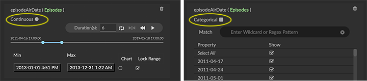
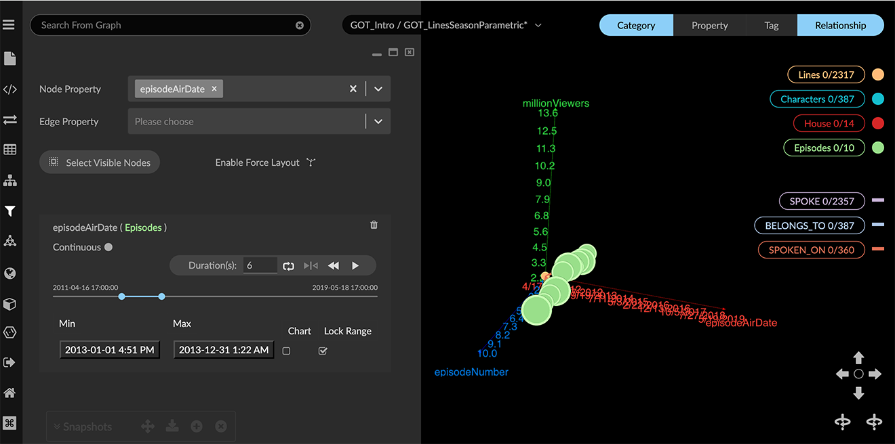
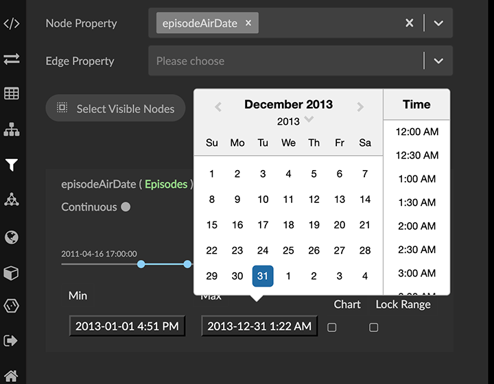
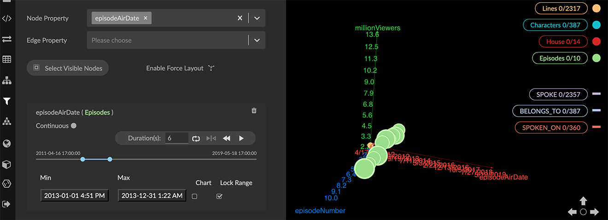
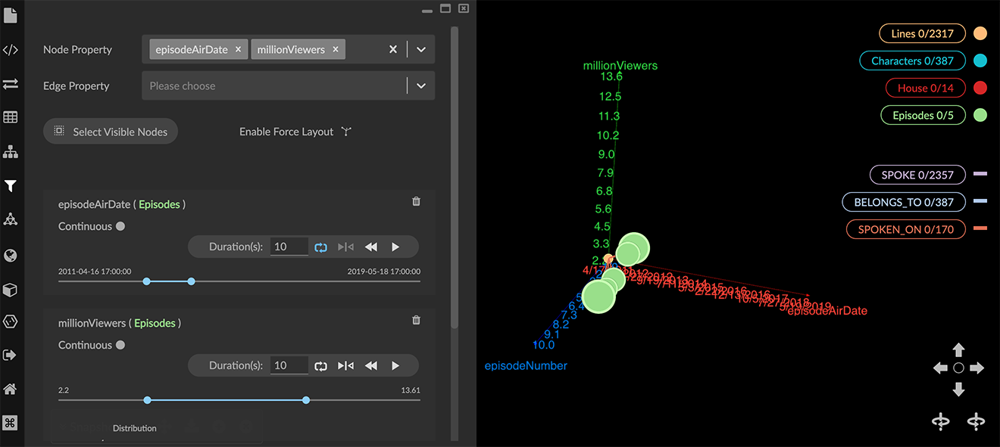
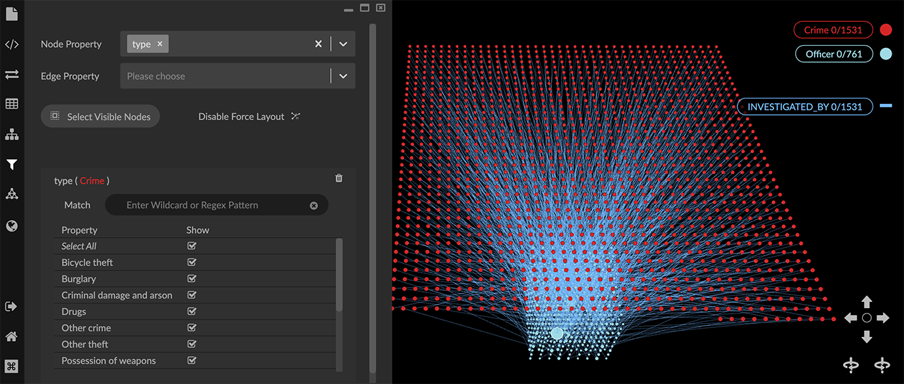
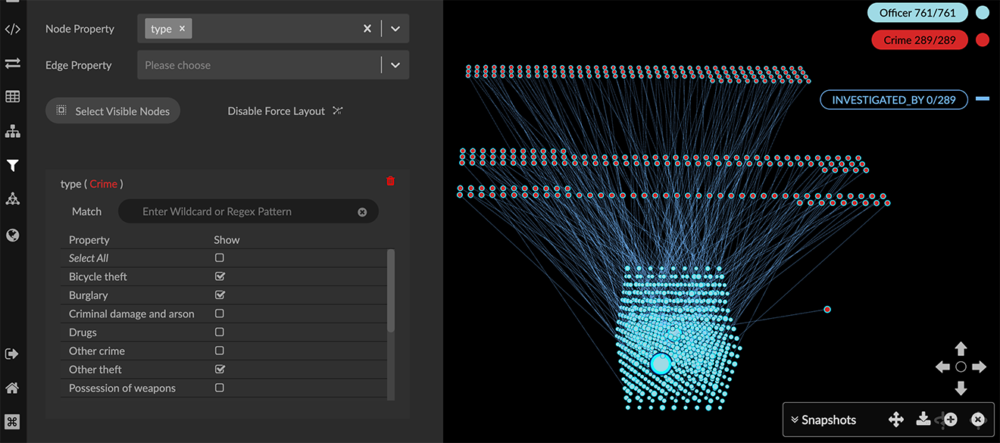
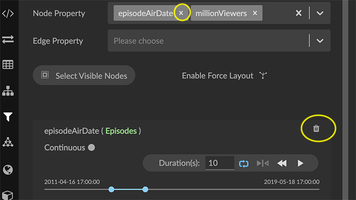
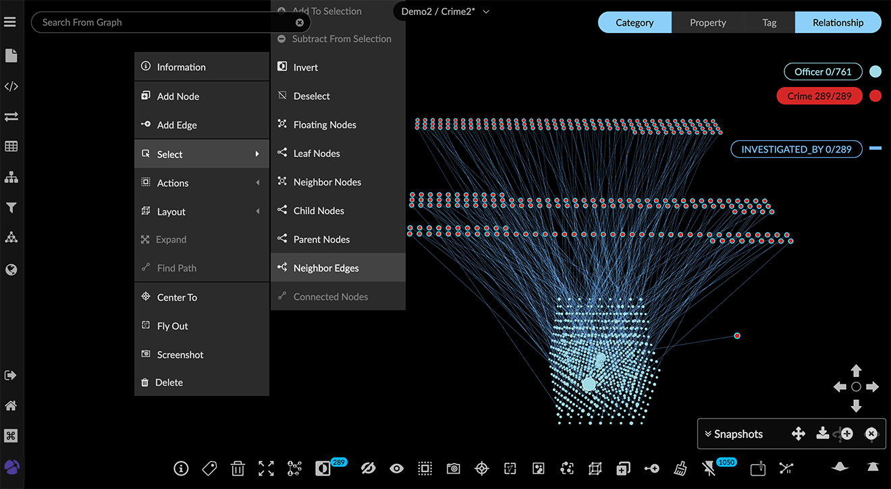
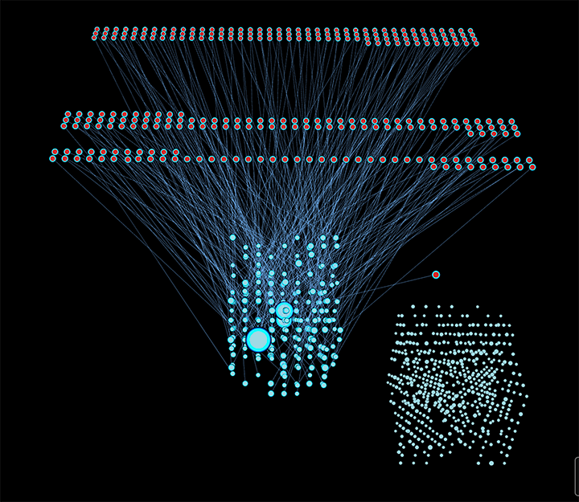

Filtering Data The Filter panel enables you to specify multiple filters that filter data by numerical continuous properties such as numbers, date-time, and lat-long coordinates), and categorical properties such as names or other text string labels. An individual filter operates on a single property (of either nodes or edges). Creating multiple filters that operate at once lets you select data with a combination of properties (for example, Name of account holder, transaction amount, date range, etc.). Data that meets filter criteria remains in the graph space where it can be selected using the Select Visible Nodes button in the Filter panel or the Select Visible Nodes toolbar icon. You can then either save or delete the filtered nodes. Filtering on numerical properties This example uses a dataset of a TV series viewership per episode displayed in a parametric layout. We can create a filter by date, then add a second filter for the number of viewers. To be considered continuous values, date-time values must be formatted as YYYY-MM-DD hh:mm:ss. Date-timestamps not in that format can be converted using an f(x) function in the Transform panel. Or, numerical values can be treated as categorical ones by clicking the Continuous / Categorical toggle on the filter.  To filter using numerical (continuous) properties: Open the Filter panel. First we’ll filter by date. From the Node Properties menu, choose the episodeAirdate property. The filter is labeled with the property name and the category or relationship label (e.g. episodeAirdate(Episodes)). A slider shows the range of the property’s timestamp values.  Set a range of dates using the Min and Max selectors under the slider. For filtering by date, you can click the value to display a calendar and select dates.  You can lock down a range of values, then use the slider or animation playhead to filter using that range (for example, by year, month, or week).  Now select another property (e.g. millionViewers) from the Node Properties menu to add a second filter for viewership. Set a range by entering minimum and maximum values in the Min and Max text boxes (e.g. 5 and 10).  The project space now includes only the filtered data. List items in the legend are updated to show the filtered numbers for each category, relationship, etc. The animation playhead lets you play through the range of filtered values. You can set start and ending values on the slider, then enter a duration and select options for the direction of play and for continuous looping through the filter values. Each filter has its own independently set playhead. You can dismiss the Filter panel and continue working with the filtered data. The data that’s filtered out is only hidden, not deleted. To restore the hidden data, delete the operative filter. Filtering on categorical properties This example uses a dataset of crimes and their investigating officers. We can filter the data by type of crime, which is a text string property. To filter using categorical properties: Open the Filter panel. From the Node Properties menu, choose the property (e.g. type). The filter is labeled with the property name and the category or relationship label ( type(Crime)). The property values in the data are displayed in alphanumeric order, with a Show checkbox for each.  All values are selected by default. Click the Select All checkbox to deselect everything, and then choose the values you want.  In the example, we’ve chosen various types of theft (e.g. bicycle theft, burglary, shoplifting, etc.) The data in the project space now includes only the filtered data. List items in the legend are updated to show the new numbers for each category, relationship, etc. Clearing a filter To restore data hidden by a filter, delete that filter. To see all your data again, clear (i.e., delete) all your existing filters. Click the Delete button above the filter’s slider, or click the property name in the Node Properties menu.  Filters do not persist when you exit the project. However, when you load a saved View or Snapshot of a filtered graph, the filters are restored and the data that was filtered out is hidden. Saving or deleting filtered nodes with Select Visible Nodes Filters do not delete data; if you want to delete filtered data, it must be explicitly selected and deleted. You can delete either the visible data, or the data that has been filtered out. To delete visible data: Click Select Visible Nodes and press del or backspace. The visible nodes and any connected edges are deleted. The graph space appears empty. Clear your filters to restore data that was filtered out. Click the Del button to the right of the filter’s slider (or the x next to the property name in the Node Properties menu). To delete filtered data: Click Select Visible Nodes (the nodes you want to keep). Clear your filters to restore data that was filtered out. Click the Del button to the right of the filter’s slider (or the x next to the property name in the Node Properties menu). All the data appears, with the nodes and connecting edges you want still selected. Click Inverse to invert the selection. Press del or backspace to delete. You can click Hide Selection in the toolbar or right-click Actions menu to hide data temporarily, rather than delete it. Isolating subgraphs from filtered data Starting with filtered results, the right-click select and add mode that operates on the Select menu lets you build subgraphs quickly. To add to a selection simply hold down Ctrl or Alt before choosing an item on the Select menu. Available options include Floating Nodes, Leaf Nodes, Neighbor Nodes, Child Nodes, Parent Nodes, Neighbor Edges, and Connected Nodes. In the categorical filter example above, Crimes involving theft of various kinds have been retained. We can now isolate the graph of Officers who investigated those filtered Crimes. To isolate a subgraph from filtered data: With the filter applied, in the Legend, click to select e.g. the Crime nodes. Right-click, press Ctrl and choose Select > Neighbor Edges to add the edges to the current selection.  Right-click again, press Ctrl and choose Select > Connected Nodes to add the connected Officer nodes to the current selection. A subgraph of filtered Crime nodes, the investigating Officer nodes, and the INVESTIGATED_BY edges are selected.  left click + drag to move the selected subgraph away from the rest of the visible data. You can now clear the filter to show all the data, then use Inverse to select data not on the subgraph and Actions > Hide to hide that data (or Delete to delete it). Save the subgraph by taking a snapshot or saving it as a new View.